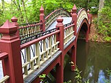
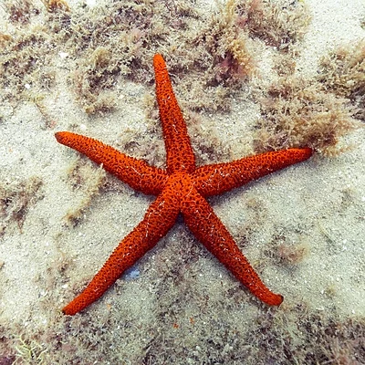

From today's featured article
Annie Dove Denmark (1887–1974) was an American music educator and
academic administrator who was the fifth president of Anderson
College (now Anderson University) in Anderson, South Carolina,
from 1928 to 1953. A talented musician in her youth, Denmark attended
what is now Meredith College and graduated with an artist's diploma
in piano in 1908. She began teaching piano at Anderson in 1917. She is commonly,
though incorrectly, cited as the first woman president of a college or university
in South Carolina. She oversaw Anderson's transition from a four-year college to a
two-year junior college, making it the first junior college in the state.
The school's debt was paid off by the South Carolina Baptist Convention in May 1938,
and attendance increased for several years after World War II when the school enrolled
more men than it ever had since becoming co-educational in 1931. She left office in
May 1953, concluding a 25-year presidency that remains the longest in Anderson's history. (Full article...)
Did you know ...

- that lovers on the campus of the College of William & Mary are encouraged to cross
the Crim Dell bridge (pictured) together?
- that after Shawn Christopher's "Another Sleepless Night" was rereleased with Mike
"Hitman" Wilson's name removed, it charted 24 places higher on the UK Singles Chart?
- it has been suggested that Crassispira incrassata may be a southern variation of
Crassispira bottae and not its own species?
- that Maria Olovennikova was the only woman present at the founding conference of
Narodnaya Volya?
- that the naturally connected Pipe Lake and Lake Lucerne are the only hydrilla-infested
lakes in the state of Washington?
- that sales from Dieux du Stade, a nude calendar produced by the French professional
rugby union club Stade Français featuring photos of its players, helped to finance the
club for many years?
- that Carmen Scheibenbogen was awarded the German Cross of Merit for her work on ME/CFS
at the suggestion of patients and relatives?
- that despite various proposals, a statue of a renowned Dunedin clergyman was not moved
from its location adjacent to a brothel and two parking lots?
In the news
- Alexander Stubb (pictured) is elected President of Finland.
- In American football, the Kansas City Chiefs defeat the San
Francisco 49ers to win the Super Bowl.
- In association football, the Africa Cup of Nations concludes
with Ivory Coast defeating Nigeria in the final.
- Marathon world record holder Kelvin Kiptum dies in a car crash at the age of 24.
Irakli Kobakhidze succeeds Irakli Garibashvili as Prime Minister of Georgia.
Ongoing: Israel–Hamas warMyanmar civil warRed Sea crisisRussian invasion of Ukraine timeline
Recent deaths: Anthony EpsteinHerbert WigweQristina RibohnHelga ParisDamo SuzukiSeiji Ozawa
On this day
February 18
- 3102 BCE – According to Hindu scriptures, Kali Yuga, the last of the four stages that the
world goes through as part of the cycle of yugas, began.
- 1814 – War of the Sixth Coalition: French troops led by Napoleon forced the Army of Bohemia
to retreat after it advanced dangerously close to Paris.
- 1977 – The Xinjiang 61st Regiment Farm fire started during Chinese New Year when a firecracker
ignited the wreaths of late Mao Zedong, killing 694 personnel.
- 2014 – A series of violent events (pictured) involving protesters, riot police, and unknown shooters
began in Kyiv that culminated in the ousting of Ukrainian president Viktor Yanukovych five days later.
Angilbert (d. 814)Per Brahe the Younger (b. 1602)Ōyama Sutematsu (d. 1919)J. Robert Oppenheimer (d. 1967)
More anniversaries: February 17February 18February 19.
Today's featured picture

Echinaster sepositus, also known as the Mediterranean red sea star, is a species of starfish in the
Echinasteridae family. It is found in the eastern Atlantic Ocean, including the Mediterranean Sea and
the French side of the English Channel, at depths of up to 250 m (820 ft). It has a wide range of habitats
including rocky, sandy and muddy bottoms, and sea-grass meadows formed of Posidonia oceanica and
Zostera. E. sepositus has five relatively slender arms, with a diameter of up to 20 cm, or occasionally
as much as 30 cm. It is a bright orange-red in colour with a soapy surface texture and a surface dotted
with evenly spaced pits from which the animal can extend its deep red gills (papula). This E. sepositus
individual was photographed in the Atlantic Ocean in Arrábida Natural Park, Portugal.